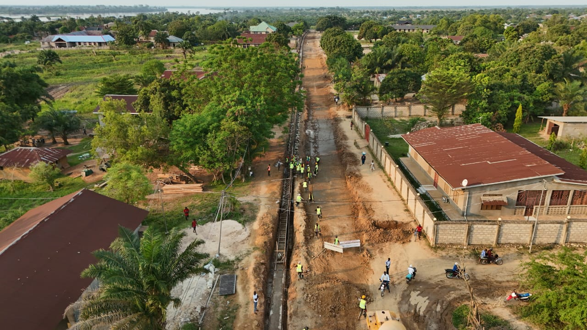

Mise en forme de la plateforme, réglage des matériaux et compactage : les premières étapes visibles de la construction de la voie.
Portfolio / Réalisations
Du terrain
à l’ouvrage.
Mohamed Ali Touihri
Mes réalisations en travaux publics, bâtiment, charpente métallique et aménagement industriel, réunies dans un même portfolio.
Explorer les catégories
Le portfolio
Quatre catégories de réalisations.
Choisissez une catégorie pour découvrir les travaux et leurs photographies.
Catégorie 01
Travaux publics
Les réalisations sont organisées en deux rubriques géographiques : Bandundu et Kinshasa, en République démocratique du Congo.
Travaux publics / Bandundu · RDC
Bandundu
17 photographies de chantier : de la préparation du terrain au bétonnage des ouvrages et des chaussées.
LieuBandundu, RDC
Longueur totale8 km
Voiries7
Année2025–2026
Préparation de la fouille, ferraillage, coffrage et bétonnage d’ouvrages linéaires de drainage en bordure de voirie.
Des panneaux armés à la mise en place du béton, une série de vues montrant la progression des travaux et la finition de surface.
Bandundu · RDC / Galerie
Au plus près du terrain.
Vues d’ensemble, phases d’exécution et détails. Cliquez sur une photographie pour l’explorer.
Travaux publics / Kinshasa · RDC
Kinshasa
Construction de six voiries à Kinshasa avec un système d’assainissement.
Kinshasa · RDC / 2025
Voiries et assainissement à Kinshasa
Un projet de construction de 12 km de voiries répartis sur six axes, avec système d’assainissement.
LieuKinshasa, RDC
Longueur totale12 km
Voiries6
Année2025
Photographies du projet
29 photographies · Cliquez pour agrandirCatégorie 02
Construction neuve
Trois bâtiments neufs à Kinshasa, dont une école et un lycée.
Construction R+1
Avenue Province · Gombe, Kinshasa
2023 · 480 m² couvertsDécouvrir le projet
École Cité du savoir
Construction d’une école R+1 à Kinshasa.
2024 · KinshasaDécouvrir le projet
Lycée libanais de Kinshasa
34 Avenue des Cliniques · Kinshasa, RDC
2023 · 788 m² · R+6Découvrir le projet
Construction neuve / Projet 01
Bâtiment R+1 à Kinshasa
Un projet de construction présenté à travers ses étapes, dans l’ordre des dates disponibles des photographies.
LocalisationAvenue Province, Gombe
Kinshasa, RDC
Kinshasa, RDC
Année2023
Surface couverte480 m²
TypeBâtiment R+1
Le projet en images
42 vues · Cliquez pour agrandirBâtiment / Construction neuve · Projet 02
École Cité du savoir
Construction d’une école R+1 au Bon Marché, à Kinshasa, en 2024. Le bâtiment comprend également des bureaux administratifs et une bibliothèque.
LieuBon Marché, Kinshasa, RDC
Surface couverte1 376,6 m²
Espace de jeux253 m²
Programme26 classes · 1 laboratoire scientifique
Galerie du projet
Photographies
27 photographies · Cliquez pour agrandir
Bâtiment / Construction neuve · Projet 03
Lycée libanais de Kinshasa
Bâtiment R+6 à usage scolaire, médical et résidentiel.
Adresse34 Avenue des Cliniques
Kinshasa, Congo-Kinshasa — RDC
Kinshasa, Congo-Kinshasa — RDC
Année2023
Surface788 m²
TypeBâtiment R+6
Répartition des étages
Programme du bâtiment
Sept niveaux accueillent les espaces scolaires, un cabinet médical et des logements résidentiels.
Rez-de-chausséeAire de jeux
1er étageParking
2e étageClasses de maternelle
3e étageClasses d’école primaire
4e étageCabinet médical de l’école
5e étage11 appartements résidentiels
6e étage11 appartements résidentiels
Le projet en images
49 photographies · Cliquez pour agrandirCatégorie 03
Rénovation & aménagement intérieur
Rénovation d’appartements, aménagement de boutiques et finitions de bâtiments résidentiels.
Future Tower
Kinshasa · RDC
Rénovation · 6 appartementsDécouvrir le projet
Aménagement de boutiques à Pont Ngaby
Pont Ngaby · Kinshasa
2024 · 800 m² · 8 boutiquesDécouvrir le projet
Bâtiment résidentiel R+1 à Mitendi
Mitendi · RDC
2024 · Finitions intérieuresDécouvrir le projet
ELICOM
Kinshasa · RDC
2022 · Bâtiment résidentielDécouvrir le projet
Bâtiment / Travaux de rénovation
Travaux de rénovation
La rénovation de 6 appartements à Future Tower, Kinshasa : des plans et du planning aux travaux et aux finitions.
Kinshasa · RDC
Future Tower
Rénovation de 6 appartements dans l’immeuble Future Tower, à Kinshasa. Le projet comprend les travaux de peinture, de carrelage, de MEP et de climatisation, ainsi que l’installation des portes et fenêtres.
- Catégorie
- Bâtiment · Travaux de rénovation
- Périmètre du projet
- 6 appartements
- Adresse
- Immeuble Future Tower
3642, boulevard du 30 Juin
Gombe, Kinshasa, RDC
Travaux réalisés
Travaux et finitions intérieures.
- Peinture
- Carrelage
- MEP : installations mécaniques, électriques et plomberie
- Climatisation
- Installation des portes et fenêtres
Mon rôle
Plans & planning des travaux.
J’ai réalisé les plans de rénovation des 6 appartements ainsi que le planning des travaux.
Le projet en images
20 photographies · Cliquez pour agrandirBâtiment / Boutiques commerciales
Aménagement de boutiques à Pont Ngaby
Aménagement de 8 boutiques commerciales sur une surface de 800 m² à Pont Ngaby, Kinshasa, en 2024.
LieuPont Ngaby, Kinshasa, RDC
Surface800 m²
Boutiques8
Année2024
Photographies du projet
51 photographies · Cliquez pour agrandirBâtiment / Bâtiments résidentiels
Bâtiment résidentiel R+1 à Mitendi
Travaux de finitions intérieures d’un bâtiment résidentiel R+1 à Mitendi, en RDC, en 2024.
LieuMitendi, RDC
TypeBâtiment résidentiel R+1
TravauxFinitions intérieures
Année2024
Photographies du projet
10 photographies · Cliquez pour agrandirBâtiment / Bâtiments résidentiels
ELICOM
Projet ELICOM à Kinshasa, réalisé en 2022.
Adresse18 Av. Kabasele Tshamala
Kinshasa, Congo-Kinshasa
Kinshasa, Congo-Kinshasa
Année2022
Le projet en images
46 photographies · Cliquez pour agrandirCatégorie 04
Industriel & charpente métallique
Hangar métallique et parking industriel à Kinshasa.
Hangar métallique ONATRA
Kinshasa · RDC
Charpente métalliqueDécouvrir le projet
Parking industriel pour semi-remorques
Kinshasa · RDC
Aménagement industrielDécouvrir le projet
Kinshasa · RDC / Zone industrielle ONATRA
Hangar métallique ONATRA
Construction d’un hangar métallique avec une mezzanine au premier étage.
LocalisationZone industrielle ONATRA
Kinshasa, RDC
Kinshasa, RDC
Surface couverte2 862 m²
Mezzanine1 876 m²
NiveauPremier étage
Le projet en images
26 photographies · Cliquez pour agrandirKinshasa · RDC / 2024
Parking industriel pour semi-remorques
Aménagement d’un parking industriel avec deux caniveaux latéraux de 100 mètres chacun, à gauche et à droite.
LieuAvenue Province, Gombe, Kinshasa, RDC
Surface6 231 m²
Caniveaux2 × 100 m
Année2024
Photographies du projet
18 photographies · Cliquez pour agrandirÀ propos
Mohamed Ali
Touihri
Mon portfolio de réalisations
Ce portfolio est organisé en quatre catégories : travaux publics, construction neuve, rénovation et aménagement intérieur, industriel et charpente métallique. Il rassemble mes réalisations à travers leurs photographies de chantier.
La rubrique Travaux publics présente des projets à Bandundu et à Kinshasa, en RDC.
Contact
Travaillons ensemble.
Pour un projet de travaux publics, de construction, de rénovation ou d’aménagement, contactez-moi directement.
E-mailvotre.adresse@email.com
Téléphone / WhatsApp+49 000 0000000
LinkedInlinkedin.com/in/votre-profil
Basé àMunich, Allemagne